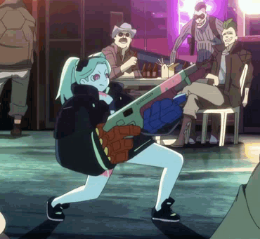
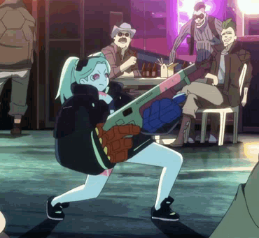

DAVID MARTINEZ
David Martinez es el protagonista principal del anime Cyberpunk: La serie sigue la historia de David, un joven que se convierte en mercenario o "edgerunner" después de perder todo en un tiroteo. La trama se desarrolla en la ciudad futurista de Night City, donde la tecnología y las modificaciones corporales son omnipresentes.
LIGHT YAGAMI
Light Yagami es el protagonista del manga y anime Death Note, creado por Tsugumi Ohba y Takeshi Obata. Light es un estudiante de secundaria extremadamente inteligente que descubre un cuaderno sobrenatural llamado "Death Note". Este cuaderno tiene el poder de matar a cualquier persona cuyo nombre sea escrito en él, siempre y cuando el usuario tenga en mente el rostro de la persona.
+

MONKEY D. LUFFY
También conocido como Sombrero de Paja, es el protagonista principal del manga y anime One Piece, creado por Eiichirō Oda. Luffy es un joven pirata con un cuerpo de goma debido a haber comido la Fruta Gomu Gomu (Fruta Hito Hito:Modelo Nika), lo que le otorga elasticidad y habilidades únicas.
 

REBECCA
Rebecca es un personaje del anime Cyberpunk: Ella es una edgerunner y forma parte de la tripulación de Maine. Rebecca es conocida por su personalidad fuerte y su habilidad con las armas. A lo largo de la serie, muestra un profundo cariño por su tripulación y está dispuesta a hacer cualquier cosa por ellos.